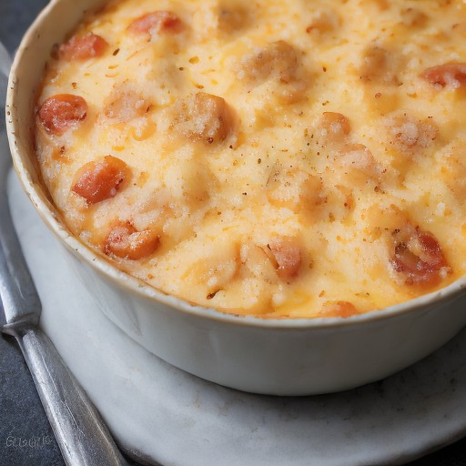

グラタン
悪魔的トマト＆モッツァレラ：とろけるチーズのトマトグラタン風！

完熟トマトの甘酸っぱさと、モッツァレラチーズのクリーミーな味わいを、濃厚なチーズソースで包み込む。一口食べれば、悪魔の美味しさに魅了されるでしょう！
💡 こんな時・こんな人におすすめ！
特別な日や、特別な夜に、心躍る美味しさをお届けします。
📋 必要な材料（ポストイット風）
材料リスト 1
- 完熟トマト2個
- モッツァレラチーズ100g
- 濃厚チーズソース大さじ2
材料リスト 2
- バター大さじ1
- 塩少々
🍳 作り方ステップ
1
1. 完熟トマトを1cm角にカットし、軽く塩こしょうで味を調え、180℃のオーブンで10分焼く。
2
2. モッツァレラチーズを細かく刻んで、濃厚チーズソースを加えて混ぜる。
3
3. 溶かしバターを加えて、チーズとトマトの塊を混ぜ合わせる。
4
4. 焼きたての焼きトマトを、チーズとトマトの塊で盛り付け、オーブンで30分焼く。